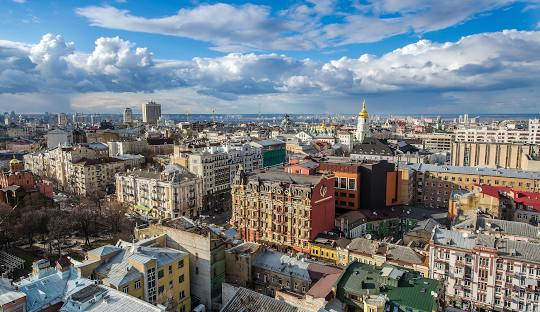

Народився в м. Дніпро, 20-го листопада, 2003 року.
З 1 по 8 клас навчався в КЗ "НСЗШ №13", потім перевівся в КЗ "НСПМШ №26". Після випуску вступив в НТУУ "КПІ ім. Ігоря Сікорського" де навчаюсь на даний момент на третьому курсі.
Київ – старовинне місто, що розташоване на обох берегах річки Дніпро в самому серці України. Це не лише столиця країни, але і одне з найстаріших міст Європи з багатою історією та культурним спадком.
